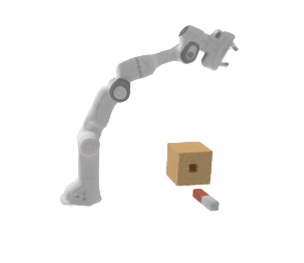
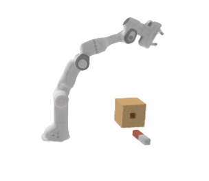

MovingParts: Motion-based 3D Part Discovery in Dynamic Radiance Field
ICLR 2024 (spotlight)
* Denote Equal Advisory
Overview Video
Generated Kubric-based Dataset and Results
For a quantitative evaluation of our motion clustering results, we generated a set of dynamic scenes utilizing the Kubric toolkit.
Here we show our rendering results on some of the scenes, including RGB images, depth, and motion grouping results.
As evident in the video, our approach consistently produces high-quality rendering results and adeptly distinguishes the distinct motion patterns exhibited by various objects.
Rendered Video
Rendered Depth
Segmentation
Rendered Video
Rendered Depth
Segmentation
Application: Real-world Scene Part Discovery and Editing
Our approach achieves high quality rendering of dynamic scenes and successfully discovers the moving parts.
In the Editing sub-section, we provide a comparison between our segmentation mask and the RGB image, demonstrating the precision with which our mask delineates the contours of the moving parts.
With the 3D part discovery, we can easily edit and render the real scene to get a brand new image.
Real-world Scene Part Discovery
Rendered Video
Rendered Depth
Segmentation
Rendered Video
Rendered Depth
Segmentation
Real-world Scene Editing


Comparison
Removal
Modification
Comparison
Removal
Modification
Application: Robotic Manipulation
Through the observation of the robot's actions, such as grasping a toy or inserting a peg,
our method accurately identify the manipulated object, as well as the links and joints of the robot.
Additionally, it is easy to replay the entire process and manipulate objects or robots at will in 3D.
Real-world Robotic Manipulation
Rendered Video
Rendered Depth
Segmentation
Rendered Video
Rendered Depth
Segmentation
Synthetic Robotic Manipulation

Start Frame
Loading...
End Frame
Replay

 

Tracking
Duplication
Removal
Rescaling
Reposing
BibTeX
@article{movingparts2023,
title={MovingParts: Motion-based 3D Part Discovery in Dynamic Radiance Field},
author={Kaizhi Yang and Xiaoshuai Zhang and Zhiao Huang and Xuejin Chen and Zexiang Xu and Hao Su},
journal={arXiv:2303.05703},
year=2023
}